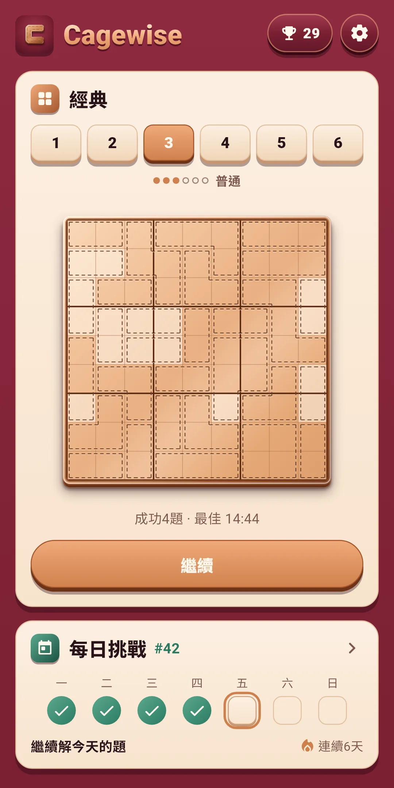
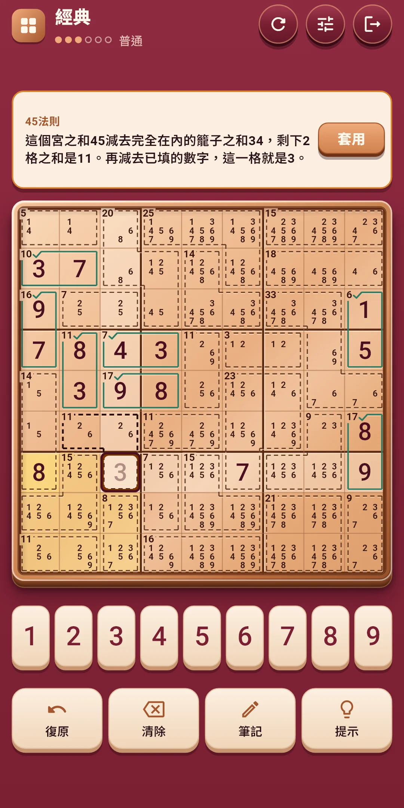
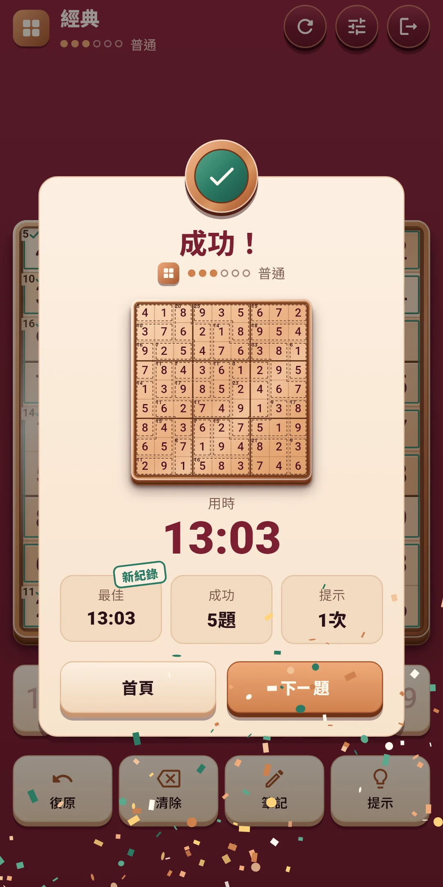
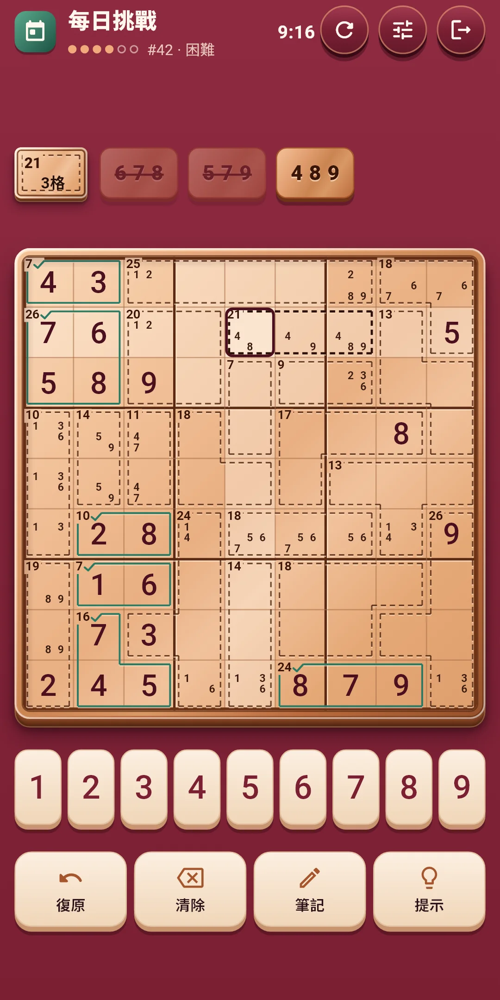
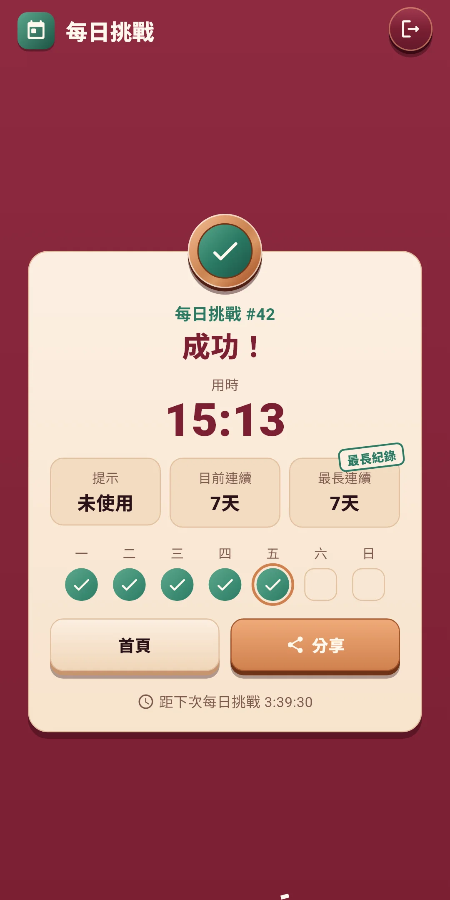
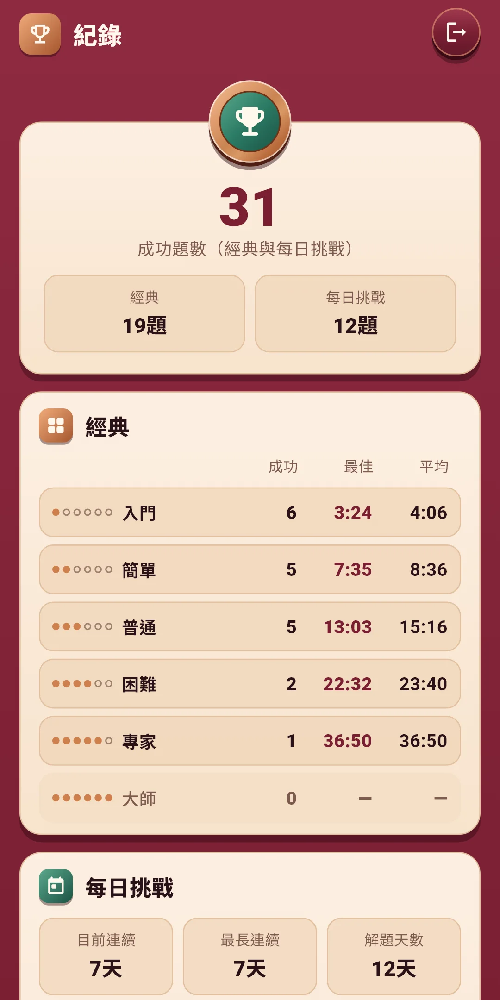
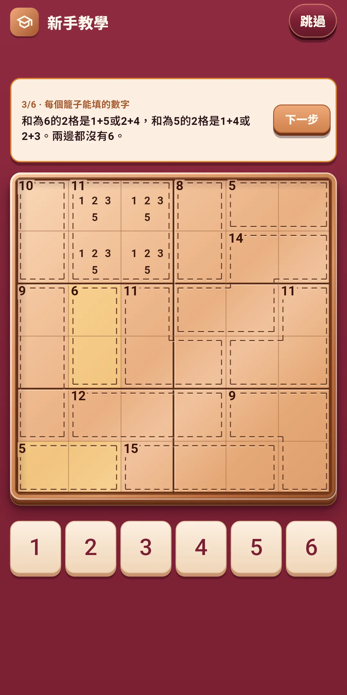

Cagewise
玩法說明
玩法說明







| 應用程式名稱 | Cagewise |
|---|---|
| 版本 | 1.0.0 |
| 開發 | Willee Project |
| 支援平台 | Android |
在9×9的盤面上填入1到9，這是一款在數獨的基礎上加入籠子（用虛線框起來的一組格子及其和）的邏輯益智遊戲，也就是殺手數獨。以籠子的和為線索，一步步推理就能解開。
新手教學用6×6的盤面展示這三點。提示中的名稱是籠子組合、隱性唯一、45法則。
更難的要點，會由提示連同理由一起告訴你（見第4章）。
下方的按鈕：
| 按鈕 | 作用 |
|---|---|
| 復原 | 一步步復原最後做的操作。不限次數 |
| 清除 | 清除選中格子裡的數字或筆記 |
| 筆記 | 開關筆記書寫 |
| 提示 | 告訴你下一步該做什麼和理由。不限次數（見第4章） |
上方一行右側的重新開始（↻）按鈕：
| 選項 | 內容 |
|---|---|
| 這一題從頭開始 | 清掉所有已填的數字和筆記，回到最初。經典模式的用時和提示也從頭算，每日挑戰則繼續累計當天的用時和提示。還沒有填數字或寫筆記時，這一項會變淡、不能點按 |
| 換一題（僅經典） | 放棄這一題，換一道同難度的題。放棄的題不算成功 |
旁邊的快速設定按鈕會打開一個面板，不離開遊戲畫面就能改音效、震動、特效和盤面設定（見第5章）。點按面板上方或往下拉就能關閉。最右邊是退出（門的形狀），退出時正在解的題會自動儲存。
提示按鈕分兩步告訴你下一步該做什麼。提示不限次數，免費使用。
在設定的盤面與輸入和輔助功能中開關。遊戲中可以用快速設定馬上更改。
Cagewise Daily #12 ✅ 18:41 提示1次 🔥 連續5天
#12是每日挑戰的編號，旁邊是用時（分:秒）。第二行是用過的提示次數（沒用過則是「未用提示」），第三行是連續紀錄（兩天以上才顯示）。第一行在任何語言中都一樣。編號從上架那天的#1開始每天加一，編號相同就是同一道題。
點按首頁右上角的獎盃按鈕打開。按鈕上會顯示成功的題數。
點按首頁右上角的齒輪打開。分為四組。遊戲中可以用快速設定按鈕馬上更改前三組。
| 項目 | 內容 |
|---|---|
| 音效 | 開關填入、清除數字，完成籠子、行、宮，以及解開題目時等的聲音。接連完成行和宮時，聲音會一個音一個音地升高 |
| 震動 | 填入或清除數字時輕輕震動，完成籠子或行、宮時更強一些，解開題目時震動較長。可以開關 |
| 減少特效 | 一次減少所有特效。開啟期間，下方的三個特效按鈕會以關閉的樣子變淡。也會依照裝置的「移除動畫」設定 |
| 動畫 · 光效 · 彩紙 | 三個連在一起的按鈕，逐項開關特效。開啟的按鈕上會有勾，長按會顯示說明。動畫是填入的數字和完成的籠子，光效是完成行、宮和解開題目，彩紙是解開題目時。沒有整個盤面晃動的特效 |
| 項目 | 內容 |
|---|---|
| 大號數字 | 把盤面上的數字畫大一些。預設關閉 |
| 先選數字 | 先選數字，再點按格子填入。預設關閉，預設是先點按格子的方式 |
| 自動整理筆記 | 填入數字後，從同一行、列、宮和籠子的筆記中刪去。預設開啟 |
| 醒目顯示相同數字 | 在盤面上醒目顯示所選數字。預設開啟 |
| 項目 | 內容 |
|---|---|
| 顯示規則衝突 | 標出重複的數字和超過總和的籠子。預設開啟 |
| 籠子組合助手 | 顯示所選籠子能填的數字組合。預設關閉 |
| 立即顯示錯誤 | 立即標出與答案不同的數字。預設關閉 |
| 項目 | 內容 |
|---|---|
| 語言 | 跟隨裝置語言（預設），或從清單中直接選擇 |
| 隱私權選項 | 再次打開廣告同意視窗。只在需要同意的地區（例如歐洲）顯示 |
| 玩法 | 再看一次新手教學 |
| 關於 | 版本、本說明（玩法說明）、隱私權政策、開放原始碼授權 |